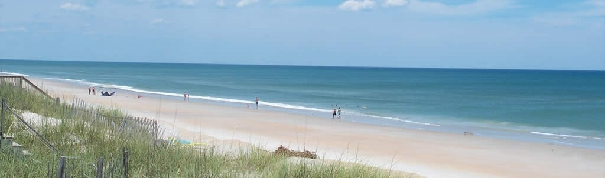

Welcome to Topsail Beach Visitor Website
About our town
Our welcoming small town is located on the southernmost part of Topsail Island, a 26-miles-long barrier island off the southeast North Carolina coast. Two other communities besides our own populate the island: Surf City above us in the center and North Topsail Beach to the north.
Each year, people flock to our beautiful island for relaxing getaways, great fishing spots, and more. There's much to do in Topsail Beach that keeps our visitors coming back.
Our history
- Pre-World War II, Topsail Island used to only be accessible by boat and would be visited for vacations, fishing trips, and even treasure hunting.
- During World War II, the US Army made the island the site of an anti-aircraft training base and constructed roads as well as a bridge over the Intracoastal Waterway.
- Around 1946, WWII's end saw the Navy beginning operations on the island to carry out Operation Bumblebee, a missile development program.
- In 1948 after the program's closure, Topsail Island was returned to its owners and development began.
- In 1963, the Town of Topsail Beach was incorporated.
It's said that the name Topsail, pronounced "Tops'l," originated from the topsails of pirate ships that would hide behind the island. However, the name likely comes from New Topsail Inlet, after which the south end was named New Topsail Beach.
For more about our history, consider a trip to our Missiles and More Museum.